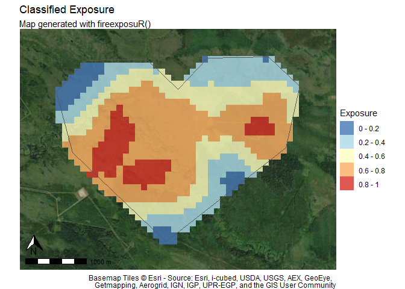

firexposuR is an R package for computing and visualizing wildfire exposure. The outputs from wildfire exposure assessments can be utilized as decision support tools for wildfire management across variable temporal horizons and spatial extents.
An important note for current (and past) Prometheus users
If Prometheus has ever been installed on your device you must take some additional steps before loading this package (and most other R packages that manipulate spatial data). Please go through the steps in
vignette("prometheus")even if you have since uninstalled the program from your computer.
Package Overview
Highlights
- provides an accessible platform for conducting wildfire exposure assessments
- automates methods previously documented in a series of scientific publications
- provides options for customization and validation to meet the needs of users applying the package across diverse use cases and geographic areas
Who the package is for
This package is for anyone who is interested in conducting wildfire exposure assessments. This can include, but is not limited to, researchers, government agencies, forest industry, consultants, communities, and interested individuals.
User’s without pre-existing knowledge of wildland fuels, spatial data, and R may need to dedicate more time and effort to learning how to apply the tools in this package by exploring the included documentation and linked resources.
What the package does
Automate published methodologies
This package was developed to automate the methods published in a series of scientific publications. Replicating the methods from a scientific publication can be challenging; it can require a significant amount of time and experience which can be a barrier to access.
Provide an accessible platform
This package and the code within it will always be free. Financial costs can also be a significant barrier to conducting wildfire risk assessments. Though this package is free to use there are still associated time costs, which will vary based on experience level. Even novice R users should have enough resources to conduct their own wildfire exposure assessments by referencing the documentation in this package and the plethora of free R tutorials available online.
What the package doesn’t
Let you skip the hard part (understanding the theory)
Effort has been made to provide as much technical detail in the documentation of this package; However, it may still be necessary to spend some time reading the associated scientific publications that the functions in this package are automating to grasp the theory behind the methodologies. Citations have been provided with DOI links throughout this manual. This is especially relevant to users who intend to adjust function parameters.
Prepare your input data
Methods in wildfire exposure are adaptable to different applications and scales. This means that the input data requirements are dependent on the intended purpose. The user is responsible for preparing the input data before using this package. Input data can be prepared in any geographic information system (GIS) program, or done directly in R. Refer to vignette("prep-input-data") for guidance and examples.
Installation
You can install the development version of fireexposuR from GitHub with:
# install.packages("devtools")
devtools::install_github("heyairf/fireexposuR")Usage example
This example shows a basic workflow to assess the long-range ember exposure and directional vulnerability for an area of interest.
Input data
# load the fireexposuR library
library(fireexposuR)
# load the terra library for spatial data functions
library(terra)
#> terra 1.7.78
# read example hazard data
hazard_file_path <- "extdata/hazard.tif"
hazard <- terra::rast(system.file(hazard_file_path, package = "fireexposuR"))
# read example polygon geometry for area of interest boundary
geom_file_path <- "extdata/polygon_geometry.csv"
geom <- read.csv(system.file(geom_file_path, package = "fireexposuR"))
# use geometry to make an area of interest polygon
aoi <- terra::vect(as.matrix(geom), "polygons", crs = hazard)The hazard layer is a binary raster where a value of 1 represents wildland fuels that have the potential to generate long-range embers (a transmission distance of up to 500 meters).
The aoi layer is a polygon representing a localized area of interest (e.g., the built environment of a community, a sensitive habitat, a campground, etc.) shown in red.
Compute exposure
# compute long-range ember exposure by setting transmission distance to "l"
exposure <- fire_exp(hazard, tdist = "l")
# compute directional exposure toward the value with default parameters
dir_exposure <- fire_exp_dir(exposure, aoi)These objects can be exported using the terra library if the user prefers visualizing and conducting further analysis outside of the R environment (e.g. a GIS). - The exposure layer can be exported as a raster - The dir_exposure layer can be exported as a shapefile
Visualize exposure
The outputs can also be visualized directly in R with the fireexposuR package.
# map the full extent of the exposure raster with a continuous scale
fire_exp_map_cont(exposure)
# map exposure classes within the area of interest with a base map
fire_exp_map_class(exposure, aoi, classify = "landscape", zoom_level = 13)
# map the directional exposure transects toward the area of interest
fire_exp_dir_map(dir_exposure, aoi)